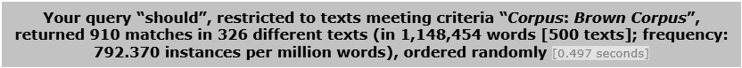
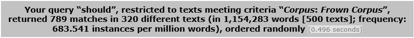
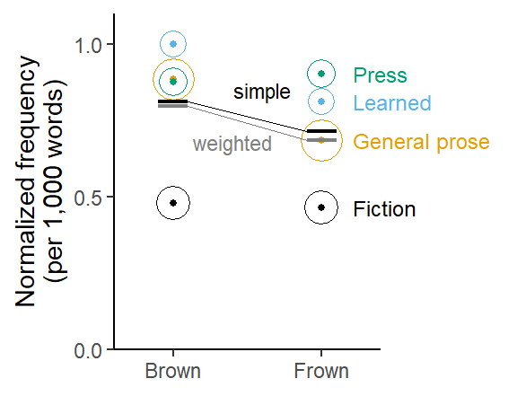

Imbalance across predictor levels affects data summaries
Obstacles to replication in corpus linguistics
corpus linguistics
replication crisis
regression
bias
imbalance
This blog post is part of a small series on obstacles to replication in corpus linguistics. It deals with problems that can arise if the observations drawn from a corpus are unbalanced across relevant subgroups in the data. I show how simple and comparative data summaries can vary depending on whether we (unintentionally) calculate weighted averages, or adjust estimates for imbalances by taking a simple average across subgroups. As these are two different estimands, the choice affects the comparability of studies – including an original study and its direct replication.
Corpus data are often characterized by a lack of balance. In contrast to experiments, where the researcher has (almost) full control over the distribution of data points across the conditions of interest, the spread of observations across the levels of relevant predictor variables is virtually always uneven in observational research. When the data break down into subgroups, many quantities of interest essentially represent some kind of average over these conditions. When dealing with unbalanced data, the researcher should actively decide whether they want subgroups to influence this average in proportion to their size, or whether a simple average is preferred. These are two different estimands, and in order for the estimates based on an original and a replication study to be comparable, they need to target the same estimand.
R setup
library(tidyverse) # for data wrangling and visualizationlibrary(dataverse) # for downloading data from TROLLinglibrary(marginaleffects) # to compute model-based estimateslibrary(MASS) # to fit a negative binomial regression modellibrary(corpora) # to calculate a log-likelihood scorelibrary(ggthemes) # for colorblind color themelibrary(kableExtra) # for drawing html tableslibrary(ggthemes) # for color-blind palettesource("C:/Users/ba4rh5/Work Folders/My Files/R projects/my_utils_website.R")
Terminology
Before we get started, let me briefly clarify how a number of terms are used in this blog post:
Original study: The study whose results are subject to a replication effort
Replication study: A study that uses new data and repeats the original work in the closest possible way, i.e. using the same research design and methods; this type of replication is often referred to as a direct/close/exact/literal replication
Original/replication estimate: For the quantity of interest (sometimes referred to as an effect size), the point estimate returned by the original/replication study
Estimands, estimators, and estimates
In empirical work, the target of inquiry is sometimes referred to as the estimand. Estimands are formulated in substantive terms; in the language sciences, they represent the linguistic objectives of our research efforts.
To obtain linguistic insights from corpus data, we apply statistical procedures to calculate numerical summaries. A specific procedure (e.g. a formula) is referred to as an estimator. Well-known examples of estimators are the arithmetic mean and the median, which offer different ways of characterizing the typical unit under study (the estimand).
Finally, the specific value we obtain by applying an estimator to a set of data is referred to as an estimate. Note that while the estimand hinges on our research objectives and a corresponding estimator is chosen by the researcher, the estimate we obtain will depend on the data at hand and therefore vary from study to study.
An excellent paper by Lundberg, Johnson, and Stewart (2021) discusses the importance of clearly defining the estimand of your study. While the authors go into much greater depth and consider the mapping between theoretical and empirical estimands, we will concentrate on what at first seems to be a rather superficial feature of estimands: The weight they give to different subgroups (or, more generally: conditions) in the data. It turns out, however, that this decision may not only affect the conclusions drawn from a study, but can also be challenging to motivate on linguistic grounds.
Readers who are already familiar with this earlier blog post may skip to the section titled “Vague estimands”.
Case study: The frequency of should in written AmE of the 1960s and 1990s
Our linguistic focus will be on the frequency of the modal verb should in written American English, and we will rely on data from the Brown and Frown Corpus. This allows us to work with straightforward research questions about normalized frequencies and their comparison, which are quite common in corpus work.
Further, questions about diachronic trends in the frequency of modals have generated discussions about replicability in corpus linguistics. Based on a comparison of the Brown and Frown corpus, Leech (2003) concluded that the frequency of English modal verbs declined in the latter half of the 20th century. This finding was challenged by Millar (2009), which in turn prompted a response by Leech (2011). McEnery and Brezina (2022) also used data on English modals as a case study for discussing and illustrating key ideas about replication in corpus linguistics.
English modal verbs therefore have a special place in the corpus-linguistic discourse on replication and replicability. I therefore decided to set up a dedicated TROLLing post (Sönning 2024), which includes frequency information on the English modals from the Brown Family of corpora. Perhaps this resource may be of value in future discussion on the topic. An excerpt from this dataset is used in the current series of blog posts, which concentrate on statistical issues that may get in the way of replication attempts in corpus work.
We will concentrate on a subset of these data: the modal verb should in Brown and Frown, i.e. written American English. The following questions guide our analysis:
What is the frequency of should in written American English of the early 1960s and early 1990s?
Has its frequency changed over time?
Data
We start by downloading the data directly from the TROLLing archive:
dat <-get_dataframe_by_name(filename ="modals_freq_form.tsv",dataset ="10.18710/7LNWJX",server ="dataverse.no",.f = read_tsv,original =TRUE )
The dataset we have downloaded contains text-level frequencies for nine modal verbs from six members of the Brown Family (Brown, Frown, LOB, FLOB, BE06, AmE06). It includes the following variables:
text_id: The text ID used in the Brown Family corpora (“A01”, “A02”, …)
modal: the modal verb
n_tokens: number of occurrences of the modal verb in the text
corpus: member of the Brown Family
genre: broad genre (Fiction, General prose, Learned, Press)
text_category: subgenre
n_words: length of the text (number of word tokens)
time_period: time period represented by the corpus
variety: variety of English represented by the corpus
Brown and Frown each consist of 500 texts, which are sampled from four different genres. The following table shows the word count and number of texts for each genre in Brown:
Table 1: Distribution of words and texts across the four braod genres in the Brown Corpus.
Genre
Words
Texts
Fiction
295,779 (25.8%)
126 (25.2%)
General prose
470,726 (41.0%)
206 (41.2%)
Learned
180,649 (15.7%)
80 (16.0%)
Press
201,300 (17.5%)
88 (17.6%)
Vague estimands
While the research questions we formulated above outline the general direction of our analysis, they leave considerable room for specifying an estimand. Thus, we may ask what exactly is meant by “the frequency of should in written American English of the early 1960s”.
The focus in this blog post is on how the four genres are to be handled when calculating a frequency estimate. This question is relevant because of their differential size in the corpus. When measuring the frequency of should in Brown, the question would be whether the four genres should be weighted proportionally to their size, or whether they should be given equal weights. In other words, are we interested in the frequency of should in a population of written American English where each genre is equally important, or a population where the weights differ, perhaps reflecting their prevalence, or currency, in the linguistic community.
The representation of the four genres in Brown is linguistically motivated. The manual states: “The list of main categories and their subdivisions was drawn up at a conference held at Brown University in February 1963. The participants in the conference [John B. Carroll, W. Nelson Francis, Philip B. Gove, Henry Kucera, Patricia O’Connor, and Randolph Quirk.] also independently gave their opinions as to the number of samples there should be in each category. These figures were averaged to obtain the preliminary set of figures used.” While the manual does not specify the rationale underlying participants’ preferences for the number of text samples per text category, we may assume that the weighting is meant to reflect the currency of these subvarieties in written American English.
Different estimands require different estimators: The currency-informed estimand of the normalized frequency weights genres in proportion to their representation in the corpus. This is equivalent to simply obtaining the corpus frequency of should: Divide the number of occurrences by the corpus size. The equal-importance estimand, on the other hand, requires a simple average over four occurrence rates, one for each genre.
Corpus frequencies are weighted averages
The typical way of answering the research questions we formulated above would be the following:
Obtain the normalized corpus frequency of should in Brown and then in Frown
Compare the two normalized frequencies, e.g. by dividing the Frown rate by the Brown rate.
Here is how we could do this in R (with normalized frequencies expressed as ‘per thousand words’):
For Brown, we get a rate of 0.79 per thousand words, which is also what CQPweb returns:
round(freq_should_Brown, 2)
[1] 0.79

For Frown, we get a rate of 0.68 per thousand words, in line with the CQPweb report:
round(freq_should_Frown, 2)
[1] 0.68

Finally, the comparison of the normalized frequencies indicates that the Frown rate is 86% as large as that in Brown:
round(freq_should_Frown / freq_should_Brown, 2)
[1] 0.86
Corpus frequencies and their differences are weighted averages, which assign differential importance to the four genres. In the case of the Brown Family of corpora, where considerable thought has been given to the representation of the text categories, this differential weighting may be desirable. When working with other corpora, crude corpus frequencies may need to be treated more cautiously.
A case in point are spoken corpora, where the word count (and implicit weight) may vary considerably across speakers and speaker groups. In written corpora, however, texts may also vary in length. In both cases (imbalance across speakers or texts), there are few situations in which differences in size reflect differences in importance. We would then like to avoid the implicit weighting implemented by plain corpus frequencies. As discussed by Egbert and Burch (2023), a different type of estimator, the mean text frequency, may then be preferable. It first calculates normalized frequencies at the text (or speaker) level, and then averages over these.
In the Brown Family, word counts are roughly balanced across texts, and we therefore need not worry about this kind of imbalance when measuring frequency. The mean text frequencies almost coincide with the corpus frequencies:
This blog post discusses situations where corpus units (texts or speakers) differ in size, and how this can affect frequency estimates.
As noted above, the Brown Family shows a different form of imbalance: The size of the four broad genres (Fiction, General Prose, Learned, Press) differs. Table 1 showed that the genre General prose accounts for 41% of the corpus size, while Learned and Press are relatively underrepresented. We now look at how this disproportion can affect estimates of frequencies and their differences.
Frequency
We first consider the estimation of normalized frequencies in Brown and Frown, which we will approach from two angles: We start with descriptive data summaries and then look at model-based estimates.
Descriptive data summaries
When using descriptive statistics to summarize the data, the equal-importance estimand is obtained using a simple average over the genre-specific normalized frequencies. In R, we can use the {dplyr} package to calculate this simple average in two steps:
The currency-informed average, on the other hand, can be obtained using plain corpus frequencies (see above). An alternative procedure, which is more flexible, uses the same two-step approach but calculates a weighted average in step 2. For this, we need a set of weights that reflect the representation of these text categories in the Brown Family. We will calculate these on the basis of both corpora (Brown and Frown):
Note that we could have included the calculation of weights into the code above, which would have been more error-tight in the present case. The specification of “external” weights, however, gives us more flexibility when calculating weighted averages. For instance, we may decide to use custom weights, or weights based on the data distribution in a different (reference) corpus.
Figure 1 compares these frequency estimates visually. Proportionally scaled circles are used to show the differential representation of the genres in the corpus. The weighted averages appear in grey, the simple ones in black.
For Brown, the simple average (0.81 ptw) and the weighted average (0.80 ptw) are very similar, indicating that the imbalance of word counts across genres does not affect the frequency estimate much. In Frown, the discrepancy is greater, with a simple average of 0.72 ptw, and a weighted average of 0.69 ptw. This is because the genres Learned and Press, which show relatively large occurrence rates of should, gain weight when calculating a simple (instead of a weighted) average: The mass for Learned increases from .16 to .25, that for Press from .17 to .25.
Draw Figure
Brown_simple <-as.numeric(Brown_simple)Brown_weighted <-as.numeric(Brown_weighted)Frown_simple <-as.numeric(Frown_simple)Frown_weighted <-as.numeric(Frown_weighted)should_data |>mutate(rate_ptw = (n_tokens/n_words)*1e3) |>group_by(corpus, genre) |> dplyr::summarize(ptw =mean(rate_ptw),n_words =sum(n_words)) |>ggplot(aes(x = corpus, y = ptw, size = n_words, group = genre, color = genre)) +geom_point(shape =1) +geom_point(shape =16, size =1) +#geom_line(size = .5) +scale_color_colorblind() +theme_classic_ls() +ylab("Normalized frequency\n(per 1,000 words)") +xlab(NULL) +scale_y_continuous(limits =c(0, 1.1), breaks =c(0, .5, 1), expand =c(0,0)) +scale_x_discrete(expand=c(.2,.2)) +scale_size_area(max_size =8) +theme(legend.position ="none",plot.margin =margin(.2, 2, .2, .2, "cm")) + directlabels::geom_dl(aes(label = genre), method =list("last.points", cex = .75, x =3.52, label =c("Fiction", "General prose", "Learned", "Press"))) +annotate("segment", x = .9, xend =1.1, y = Brown_weighted, yend = Brown_weighted, linewidth = .8, color ="grey50") +annotate("segment", x = .9, xend =1.1, y = Brown_simple, yend = Brown_simple,linewidth = .8) +annotate("segment", x =1.9, xend =2.1, y = Frown_weighted, yend = Frown_weighted, linewidth = .8, color ="grey50") +annotate("segment", x =1.9, xend =2.1, y = Frown_simple, yend = Frown_simple, linewidth = .8) +annotate("segment", x =1.1, xend =1.9, y = Brown_weighted, yend = Frown_weighted,linewidth = .3, color ="grey50") +annotate("segment", x =1.1, xend =1.9, y = Brown_simple, yend = Frown_simple, linewidth = .3) +annotate("text", x =c(1.4, 1.6), y =c(.68, .85), label =c("weighted", "simple"), size =3, color =c("grey50", "black")) +coord_cartesian(clip="off")ggsave("should_imbalance_brown.pdf")

Figure 1: Estimated frequency of should in Brown and Frown: Comparison of simple and weighted averages across genres.
Model-based estimates
When calculating model-based predictions, we can likewise decide whether we want to form simple or weighted averages. The default behavior in the {marginaleffects} package is to use the in-sample distribution of predictor variables to calculate average predictions. This is to say that, unless explicitly told to do otherwise, the functions in the package will usually calculate weighted averages.
Let’s take a look at how to produce simple and weighted averages using a negative binomial model of should in Frown. The first step is to fit the model:
m_nb_Frown <- MASS::glm.nb( n_tokens ~ genre +offset(log(n_words)), data = should_Frown)
The function avg_predictions() calculates average predictions. Its default behavior for the data at hand returns a frequency estimate that is unlikely to be of interest to us. This is because it uses the in-sample mean text length (n_words) to adjust the predicted rate. The estimate of 1.58 is therefore the expected frequency ‘per 2,309 words’:
avg_predictions( m_nb_Frown)
Estimate Std. Error z Pr(>|z|) S 2.5 % 97.5 %
1.58 0.0899 17.6 <0.001 227.7 1.4 1.76
Type: response
We must take control over the kind of normalized frequency we are getting. We prefer ‘per 1,000 words’ and therefore use the argument variables to specify n_words = 1000. Now we get a more interpretable estimate:
We note that this is close to the weighted mean we calculated above, which means that the genres are weighted in proportion to their size. This reflects the fact that the {marginaleffects} package by default averages over the estimation sample, and therefore propagates imbalances into the averages (which may be desirable or not). Specifically, the function avg_predictions() starts by calculating a model-based prediction for each text in the data, assuming it is 1,000 words long (as specified by variables = list(n_words = 1000))), and then averages over these 500 model-based estimates.
Another way of forming weighted predictions is to use the argument datagrid() to define the conditions over which we average, and then add another argument, wts, giving the weight of these conditions. This strategy is useful if we want to use an externally informed set of custom weights. The following returns (almost) the same results as the previous code:
Estimate Std. Error z Pr(>|z|) S 2.5 % 97.5 %
0.685 0.0389 17.6 <0.001 227.7 0.608 0.761
Type: response
If we instead prefer a simple average, we can use the argument newdata to explicitly define the conditions to average over. This way we tell the function not to take the estimation sample as a basis for calculating predictions (and weighting), but instead define the reference grid over which to average. The following code asks for a simple average over four conditions, which represent different genres but have the same length. The result is close to the simple average we calculated above.
Estimate Std. Error z Pr(>|z|) S 2.5 % 97.5 %
0.715 0.0448 16 <0.001 188.2 0.627 0.802
Type: response
This shows that imbalances in the data can have an effect on simple data summaries such as estimates of average normalized frequencies. This is sometimes referred to as imbalance bias, and in the present case, we could refer to it as genre imbalance bias. This kind of distortion can occur when (i) there is imbalance across subgroups in the data and (ii) the quantity of interest varies from subgroup to subgroup. We have seen how to adjust for this form of bias using model-based predictions.
Frequency differences
In the same way, imbalance bias can affect frequency differences. Recall that a crude comparison of the corpora reveals that the frequency of should in Frown is only 86% as high as that in Brown. Since this comparison is based on two corpus frequencies, each of which is potentially affected by imbalance bias, the comparison may likewise be driven into the direction of more strongly represented genres.
Descriptive data summaries
Figure 2 shows the diachronic trends in the four genres. We note that while Press and Fiction show virtually no difference between Brown and Frown, a diachronic cline is apparent for Learned and General prose. Seeing that General prose is the most strongly represented genre, we would expect weighted differences to be pulled into its direction, meaning that a weighted frequency difference will be larger than a simple frequency difference, which would give the same weight to all genres.
Figure 2: Diachronic trends by text category: Frequency of should in Frown vs. Brown, broken down by genre.
We can calculate descriptive frequency comparisons according to the two schemes, i.e. by either weighting all genres equivalently, or in proportion to their representation in the data. This returns two slightly different estimates: A frequency decline by 11% (simple comparison) or by 13% (weighted comparison).
Let us again look at how to obtain these two types of comparison using a regression model. We start by fitting a negative binomial model that includes two predictors, Corpus and Genre, as well as their interaction.
m_nb_corpus <- MASS::glm.nb( n_tokens ~ corpus * genre +offset(log(n_words)), data = should_data)
This kind of model allows us to calculate frequency comparisons at the level of the individual genres (similar to what we saw in Figure 2 above). Alternatively, we may average over the four genres, to get a general estimate of how the frequency of should differs between the corpora.
For purposes of illustration, let’s use the {marginaleffects} package to get genre-level frequency comparisons. We use the function comparisons() to do so.
The argument variables specifies the focal variable(s), i.e. the one(s) whose levels are to be compared. In our case, this is the predictor Corpus.
The argument newdata allows us to specify the location in the predictor space at which to make comparisons. This means that it allows us to take control over the levels of the non-focal variables. Since we want a comparison for each genre, we specify all genres, and we also want to compare normalized frequencies ‘per 1,000 words’.
Finally, by specifying transform = exp, we are asking comparisons() to exponentiate the log-scale differences, which yields rate ratios.
# A tibble: 4 × 5
genre contrast estimate conf.low conf.high
<fct> <chr> <dbl> <dbl> <dbl>
1 fiction Frown - Brown 0.98 0.84 1.16
2 general_prose Frown - Brown 0.82 0.68 0.99
3 learned Frown - Brown 0.83 0.59 1.17
4 press Frown - Brown 1.03 0.75 1.42
We can use the function avg_comparisons() to average over the four genres. The simple average is obtained as follows. Note that the code is almost identical to the one we used above, apart from replacing the function name:
Estimate Pr(>|z|) S 2.5 % 97.5 %
0.911 0.168 2.6 0.797 1.04
Term: corpus
Type: response
Comparison: Frown - Brown
Using a simple average over the genres, the model-based estimate of the rate ratio is 91%: The normalized frequency in Frown is 91% as large as that in Brown. The regression model also provides a 95% confidence interval for this estimate, which ranges from 90% to 104%.
To obtain a model-based weighted average, we use the argument wts = brown_family_weights$genre_weight to specify the weights of the conditions in the reference grid. Our reference grid consists of four rows, so four weights are required, one for each genre.
Estimate Pr(>|z|) S 2.5 % 97.5 %
0.895 0.0648 3.9 0.796 1.01
Term: corpus
Type: response
Comparison: Frown - Brown
Using a weighted average over the genres, the model-based estimate of the rate ratio is 89%, with the 95% CI ranging from 80% to 101%.
We observe that these model-based estimates differ from the descriptive ones reported above. Table 2 shows that the model-based estimates suggest slightly smaller differences between Brown and Frown. This is due to the fact that averaging was done on different scales: While the descriptive ratios were averaged on the data scale (i.e. ratios), the model-based estimates were averaged on the model scale (i.e. log ratios) and the average then back-transformed into a ratio. The discrepancy between these ways of forming averages will be discussed in a future blog post.
Table 2: Comparison of simple and weighted summary statistics vs. model-based estimates.
Comparison
Descriptive
Model-based
Simple
89%
91%
Weighted
87%
89%
Relevance for replication
In order for the statistical results of an original and a replication study to be comparable, they need to be concerned with the same target quantity, or estimand. One issue that will always be relevant when working with observational data is the imbalance of observations across relevant subgroups, where “relevant” means that they show an association with the outcome variable. Corpus frequencies such as those reported in the CQPweb interface then represent weighted data summaries that reflect the disproportional representation of subgroups in the data.
Due to the directly parallel design of Brown and Frown, we saw relatively minor differences between currency-based and equal-importance (i.e. weighted and simple) normalized frequencies. Nevertheless, the choice of estimand did have an effect on our estimates and statistical uncertainty intervals.
This issue will be more serious when we compare results across corpora that differ in composition. It is then arguably negligent to work with plain corpus frequencies. When comparing the BNC and COCA, for instance, comparisons should be adjusted for differences in genre coverage and representation (see Sönning and Schlüter 2022, 29–31 for a worked example).
In general, it is therefore necessary for any type of corpus analysis to think carefully about imbalances in the data and how these will propagate into the statistical results. If the disproportional representation of subgroups in the data is a meaningful feature of the population of interest, the researcher may wish to preserve it in their data summaries. A replication study, however, should be based on the same weighting scheme as the original study, which means that adjustments to the way in which weighted averages are formed will be necessary.
This issue should prompt us to generally think more carefully about imbalances in corpus data. Here, we have dealt with a single variable, genre, whose distribution in the data can usually be recovered from the corpus documentation. The issue, however, applies to any predictor variable that (i) is relevant, i.e. shows an association with the outcome; and (ii) whose distribution in the data is out of balance. Whether adjustments should be made for imbalances then depends on whether distributional asymmetries reflect a meaningful feature of the population of interest, or rather a nuisance.
We discuss the question of weighting model-based estimates in some more detail in Sönning and Grafmiller (2024, 163–69), where we suggest that a useful default approach may be to retain sample-based weights for internal (or linguistic) variables in the data, whose distribution cannot be controlled during corpus compilation. External variables, on the other hand, which primarily reflect corpus design (e.g. characteristics of the speaker or text) may be considered as candidates for adjustment. Note that this does not necessarily mean that they are assigned equivalent weights.
Summmary
Due to their observational nature, corpus data are often unbalanced. If imbalances affect variables that show an association with the outcome, a study may target different estimands, depending on how imbalances are handled when summarizing the data. While weighted averages propagate imbalances into our summaries, simple averages assign equal weight (and importance) to subgroups. In this blog post, we used the Brown Family of corpora, which is unbalanced by design. Genres differ in size, and when measuring and comparing normalized frequencies, we need to decide how to work with this asymmetry. Importantly, corpus frequencies, which are reported in corpus analysis software, are always weighted averages reflecting the composition of the corpus. The choice of estimand is a linguistic decision – it depends on the nature of the (hypothetical) population we are interested in. In replication work, however, it is also a methodological decision: A replication study must ensure that it targets the same estimand as the original study.
References
Egbert, Jesse, and Brent Burch. 2023. “Which Words Matter Most? Operationalizing Lexical Prevalence for Rank-Ordered Word Lists.”Applied Linguistics 44 (1): 103–26. https://doi.org/10.1093/applin/amac030.
Leech, Geoffrey N. 2003. “Modality on the Move: The English Modal Auxiliaries 1961-1992.” In Modality in Contemporary English, 223–40. DE GRUYTER. https://doi.org/10.1515/9783110895339.223.
———. 2011. “The Modals ARE Declining: Reply to Neil Millar’s ‘Modal Verbs in TIME: Frequency Changes 1923–2006,’ International Journal of Corpus Linguistics 14:2 (2009), 191–220.”International Journal of Corpus Linguistics 16 (4): 547–64. https://doi.org/10.1075/ijcl.16.4.05lee.
Lundberg, Ian, Rebecca Johnson, and Brandon M. Stewart. 2021. “What Is Your Estimand? Defining the Target Quantity Connects Statistical Evidence to Theory.”American Sociological Review 86 (3): 532–65. https://doi.org/10.1177/00031224211004187.
McEnery, Tony, and Vaclav Brezina. 2022. Fundamental Principles of Corpus Linguistics. Cambridge University Press. https://doi.org/10.1017/9781107110625.
Millar, Neil. 2009. “Modal Verbs in TIME: Frequency Changes 1923–2006.”International Journal of Corpus Linguistics 14 (2): 191–220. https://doi.org/10.1075/ijcl.14.2.03mil.
Sönning, Lukas. 2024. “Background data for: Some obstacles to replication in corpus linguistics.” DataverseNO. https://doi.org/10.18710/7LNWJX.
Sönning, Lukas, and Jason Grafmiller. 2024. “Seeing the Wood for the Trees: Predictive Margins for Random Forests.”Corpus Linguistics and Linguistic Theory 20 (1): 153–81. https://doi.org/10.1515/cllt-2022-0083.
Sönning, Lukas, and Julia Schlüter. 2022. “Comparing Standard Reference Corpora and Google Books Ngrams: Strengths, Limitations and Synergies in the Contrastive Study of Variable h- in British and American English.” In Data and Methods in Corpus Linguistics, 17–45. Cambridge University Press. https://doi.org/10.1017/9781108589314.002.
Citation
BibTeX citation:
@online{sönning2025,
author = {Sönning, Lukas},
title = {Imbalance Across Predictor Levels Affects Data Summaries},
date = {2025-05-04},
url = {https://lsoenning.github.io/posts/2025-05-03-imbalance_bias/},
langid = {en}
}
![]()